Code
# no Google Colab, o PyTorch já vem instalado; o timm pode não vir
import sys
if "google.colab" in sys.modules:
!pip install -q timmLink Colab

Até aqui usamos redes simples: MLPs e uma CNN pequena. Hoje vamos conhecer as arquiteturas que marcaram a evolução do Deep Learning, entender por que cada uma surgiu e usar modelos de verdade, pré-treinados, baixados do Hugging Face.
Roteiro
O mecanismo de atenção (Transformers, ViT) e o aprendizado auto-supervisionado ficam para a aula 7 (dl7_atencao.ipynb).
Para cada arquitetura há uma ficha 🗂️ com o ano, se é antiga ou recente, o tipo de treino, por que é importante, pontos fortes e limitações.
# no Google Colab, o PyTorch já vem instalado; o timm pode não vir
import sys
if "google.colab" in sys.modules:
!pip install -q timmimport os
os.environ.setdefault("HF_HUB_DISABLE_PROGRESS_BARS", "1") # saída mais limpa ao baixar do Hugging Face
os.environ.setdefault("HF_HUB_VERBOSITY", "error")
import time
import zipfile
import numpy as np
import pandas as pd
import matplotlib.pyplot as plt
import matplotlib.patheffects as pe
from matplotlib.patches import Rectangle
from matplotlib.colors import ListedColormap
import torch
import torch.nn as nn
import torch.nn.functional as F
from torchvision import datasets, transforms
from skimage import data, io
from PIL import Image
# cores e estilo dos gráficos (as mesmas das aulas de Machine Learning)
AZUL, LARANJA, VERDE, CINZA, TINTA = "#2a78d6", "#eb6834", "#1baf7a", "#898781", "#52514e"
plt.rcParams.update({
"axes.spines.top": False, "axes.spines.right": False,
"axes.edgecolor": CINZA, "axes.labelcolor": TINTA,
"xtick.color": TINTA, "ytick.color": TINTA,
"axes.grid": True, "grid.color": "#e6e5e1", "figure.dpi": 110,
})
torch.manual_seed(42)
np.random.seed(42)
# redes grandes (ResNet-50, U-Net) ganham com GPU, inclusive a do Mac (MPS); redes pequenas rodam melhor na CPU
DEVICE = "cuda" if torch.cuda.is_available() else ("mps" if torch.backends.mps.is_available() else "cpu")
DEVICE_PEQUENO = "cuda" if torch.cuda.is_available() else "cpu"
print(f"PyTorch {torch.__version__} | redes grandes: {DEVICE} | redes pequenas: {DEVICE_PEQUENO}")PyTorch 2.14.1 | redes grandes: mps | redes pequenas: cpuCada ponto é uma arquitetura que mudou o rumo da área. Repare em três “eras”: as CNNs (convoluções), as redes muito profundas com conexões residuais, e os Transformers, que hoje são treinados cada vez mais de forma auto-supervisionada (sem rótulos).
marcos = [ # (ano, nome, família, deslocamento vertical do rótulo)
(1998, "LeNet-5", "CNN", 1), (2012, "AlexNet", "CNN", 1), (2014, "VGG", "CNN", -1),
(2014.6, "GoogLeNet", "CNN", 1.9), (2015.2, "ResNet", "Residual / encoder-decoder", -1.9),
(2015.6, "U-Net", "Residual / encoder-decoder", 1), (2017, "Transformer", "Atenção", -1),
(2020, "ViT", "Atenção", 1), (2021, "MAE, DINO", "Auto-supervisionado", -1),
(2022, "ConvNeXt", "CNN", 1.9), (2023, "DINOv2, Prithvi", "Auto-supervisionado", 1),
(2025, "DINOv3", "Auto-supervisionado", -1),
]
cores_familia = {"CNN": AZUL, "Residual / encoder-decoder": VERDE, "Atenção": LARANJA, "Auto-supervisionado": "#4a3aa7"}
fig, ax = plt.subplots(figsize=(15, 3.6))
ax.axhline(0, color=CINZA, lw=1.5, zorder=1)
for ano, nome, familia, dy in marcos:
cor = cores_familia[familia]
ax.plot([ano, ano], [0, dy * 0.8], color=cor, lw=1, zorder=1)
ax.scatter(ano, 0, s=90, color=cor, zorder=3, edgecolor="white", lw=1.5)
ax.text(ano, dy, nome, ha="center", va="center", color=TINTA, fontsize=10,
bbox={"boxstyle": "round,pad=0.3", "facecolor": "white", "edgecolor": cor})
for familia, cor in cores_familia.items():
ax.scatter([], [], s=70, color=cor, label=familia)
ax.set(xlim=(1996, 2027), ylim=(-2.6, 2.6), yticks=[], title="Arquiteturas que marcaram o Deep Learning")
ax.spines["left"].set_visible(False)
ax.grid(False)
ax.legend(frameon=False, loc="upper center", bbox_to_anchor=(0.5, -0.12), ncols=4)
plt.show()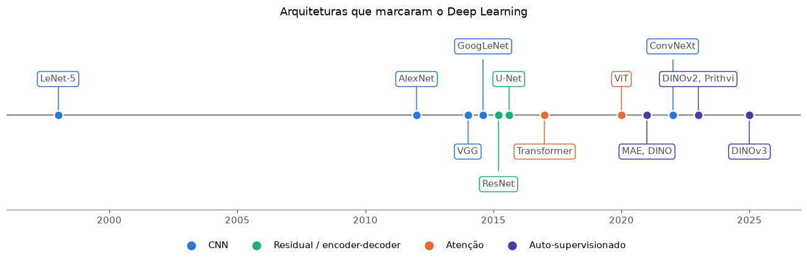
Nas aulas anteriores, “achatamos” a imagem do MNIST em um vetor de 784 números.
Um dos maiores problemas é perder toda a informação espacial da imagem, perdemos os objetos e seus vizinhos, jogamos fora a primeira lei de Tobler. Além disso não é eficiente vetorizar imagens grandes, teríamos redes extremamente grandes que são fáceis de acontecerem um overfitting.
for nome, (h, w, c) in {"MNIST": (28, 28, 1), "foto 224 × 224 RGB": (224, 224, 3), "imagem Sentinel-2 512 × 512, 13 bandas": (512, 512, 13)}.items():
entradas = h * w * c
print(f"{nome:<40} {entradas:>10,} entradas → 1ª camada densa com 128 neurônios = {entradas * 128:>14,} pesos")MNIST 784 entradas → 1ª camada densa com 128 neurônios = 100,352 pesos
foto 224 × 224 RGB 150,528 entradas → 1ª camada densa com 128 neurônios = 19,267,584 pesos
imagem Sentinel-2 512 × 512, 13 bandas 3,407,872 entradas → 1ª camada densa com 128 neurônios = 436,207,616 pesosTrês problemas de usar camadas densas direto nos pixels:
A convolução aborda essas falhas de utilizar MLP para imagens, através do kernel ou também conhecido como filtro (exemplo 3 × 3), o mesmo filtro desliza pela imagem, e possui apenas 9 pesos referente aquele filtro. Isso cria um peso compartilhado para a imagem inteira, o que beneficia a generalização das redes.
Em cada posição, multiplicamos o filtro (kernel) pelos pixels embaixo dele, elemento a elemento, e somamos. O resultado vira um pixel da saída, o mapa de características (feature map).
def convolucao_manual(imagem, kernel):
"""Convolução 2D (sem padding, passo 1)."""
H, W = imagem.shape
k = kernel.shape[0]
saida = torch.zeros(H - k + 1, W - k + 1)
for i in range(H - k + 1):
for j in range(W - k + 1):
janela = imagem[i:i + k, j:j + k]
saida[i, j] = (janela * kernel).sum() # multiplica elemento a elemento e soma
return saida
imagem = torch.tensor([[0, 0, 0, 0, 0, 0],
[0, 9, 9, 9, 9, 0],
[0, 9, 0, 0, 9, 0],
[0, 9, 0, 0, 9, 0],
[0, 9, 9, 9, 9, 0],
[0, 0, 0, 0, 0, 0]], dtype=torch.float32)
kernel = torch.tensor([[-1, 0, 1],
[-1, 0, 1],
[-1, 0, 1]], dtype=torch.float32) # detecta bordas verticais
saida = convolucao_manual(imagem, kernel)
# escrita em pytorch
saida_torch = F.conv2d(imagem[None, None], kernel[None, None])[0, 0] # (lote, canal, H, W)
print(f"entrada {tuple(imagem.shape)} * kernel {tuple(kernel.shape)} - saída {tuple(saida.shape)}")
print(f"igual ao F.conv2d do PyTorch? {torch.equal(saida, saida_torch)}")entrada (6, 6) * kernel (3, 3) - saída (4, 4)
igual ao F.conv2d do PyTorch? Truedef desenha_matriz(ax, m, titulo, destaque=None, cmap="Blues", vmin=None, vmax=None):
ax.imshow(m, cmap=cmap, vmin=vmin, vmax=vmax)
for i in range(m.shape[0]):
for j in range(m.shape[1]):
ax.text(j, i, f"{m[i, j]:g}", ha="center", va="center", fontsize=11, color=TINTA,
path_effects=[pe.withStroke(linewidth=3, foreground="white")])
if destaque:
(i, j, k) = destaque
ax.add_patch(Rectangle((j - 0.5, i - 0.5), k, k, fill=False, edgecolor=LARANJA, lw=3))
ax.set(title=titulo, xticks=[], yticks=[])
ax.grid(False)
i, j = 1, 0 # posição destacada
fig, axes = plt.subplots(1, 3, figsize=(14, 4.5), width_ratios=[6, 3, 4])
desenha_matriz(axes[0], imagem.numpy(), "entrada 6 × 6 (um quadrado)", destaque=(i, j, 3))
desenha_matriz(axes[1], kernel.numpy(), "kernel 3 × 3\n(borda vertical)", cmap="RdBu_r", vmin=-2, vmax=2)
desenha_matriz(axes[2], saida.numpy(), "saída 4 × 4 (feature map)", destaque=(i, j, 1), cmap="RdBu_r", vmin=-30, vmax=30)
janela = imagem[i:i + 3, j:j + 3]
plt.suptitle(f"Posição destacada: soma(janela × kernel) = {(janela * kernel).sum():g}", y=1.0)
plt.tight_layout()
plt.show()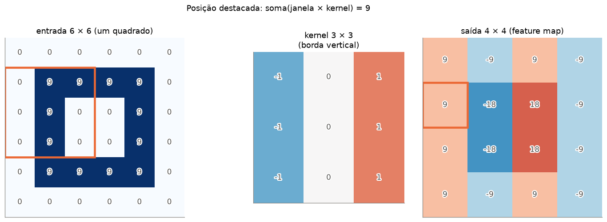
O kernel de borda vertical responde positivo na borda esquerda do quadrado (escuro → claro) e negativo na borda direita (claro → escuro). No interior, onde a imagem é constante, a resposta é zero.
Detalhe: o que o PyTorch chama de convolução é, matematicamente, uma correlação cruzada (o kernel não é espelhado). Para redes neurais tanto faz: os pesos do kernel são aprendidos.
Antes do Deep Learning, os filtros eram desenhados à mão por especialistas. Já estudamos eles em detalhe na aula de Imagem Processing
foto = torch.tensor(data.camera(), dtype=torch.float32)[None, None] / 255 # (1, 1, 512, 512)
filtros = {
"original": [[0, 0, 0], [0, 1, 0], [0, 0, 0]],
"desfoque (média)": [[1 / 9] * 3] * 3,
"borda vertical (Sobel)": [[-1, 0, 1], [-2, 0, 2], [-1, 0, 1]],
"borda horizontal (Sobel)": [[-1, -2, -1], [0, 0, 0], [1, 2, 1]],
"realce (sharpen)": [[0, -1, 0], [-1, 5, -1], [0, -1, 0]],
}
fig, axes = plt.subplots(1, 5, figsize=(18, 4))
for ax, (nome, k) in zip(axes, filtros.items()):
resposta = F.conv2d(foto, torch.tensor(k, dtype=torch.float32)[None, None], padding=1)[0, 0]
ax.imshow(resposta.abs() if "borda" in nome else resposta, cmap="gray")
ax.set_title(nome)
ax.axis("off")
plt.tight_layout()
plt.show()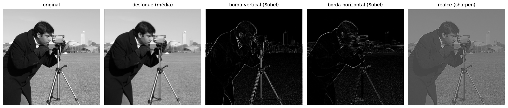
A grande ideia das CNNs (Convolutional Neural Networks): em vez de desenhar os filtros à mão, deixamos os valores dos kernels serem pesos treináveis. A rede descobre sozinha, pela descida do gradiente, quais filtros são úteis para a tarefa.
nn.Conv2d| Parâmetro | O que controla |
|---|---|
in_channels |
canais da entrada (1 para cinza, 3 para RGB, 13 para Sentinel-2) |
out_channels |
quantos filtros a camada aprende = quantos feature maps ela produz |
kernel_size |
tamanho do filtro (3 × 3 é o mais comum) |
stride |
o passo com que o filtro desliza (2 = a saída fica com metade do tamanho) |
padding |
bordas de zeros adicionadas (com padding=1 e kernel 3, a saída tem o mesmo tamanho) |
Tamanho da saída: \(\text{saída} = \left\lfloor \frac{\text{entrada} + 2 \cdot \text{padding} - \text{kernel}}{\text{stride}} \right\rfloor + 1\)
Número de pesos: \(\text{out\_channels} \times (\text{in\_channels} \times k \times k) + \text{out\_channels}\) (vieses). Repare que não depende do tamanho da imagem.
x = torch.randn(1, 3, 224, 224) # uma imagem RGB 224 × 224
configs = [
dict(in_channels=3, out_channels=16, kernel_size=3, stride=1, padding=0),
dict(in_channels=3, out_channels=16, kernel_size=3, stride=1, padding=1),
dict(in_channels=3, out_channels=16, kernel_size=3, stride=2, padding=1),
dict(in_channels=3, out_channels=64, kernel_size=7, stride=2, padding=3), # a 1ª camada da ResNet-50
]
linhas = []
for cfg in configs:
conv = nn.Conv2d(**cfg)
linhas.append({**cfg, "pesos do kernel": tuple(conv.weight.shape), "nº de parâmetros": sum(p.numel() for p in conv.parameters()),
"saída": tuple(conv(x).shape)})
pd.DataFrame(linhas)| in_channels | out_channels | kernel_size | stride | padding | pesos do kernel | nº de parâmetros | saída | |
|---|---|---|---|---|---|---|---|---|
| 0 | 3 | 16 | 3 | 1 | 0 | (16, 3, 3, 3) | 448 | (1, 16, 222, 222) |
| 1 | 3 | 16 | 3 | 1 | 1 | (16, 3, 3, 3) | 448 | (1, 16, 224, 224) |
| 2 | 3 | 16 | 3 | 2 | 1 | (16, 3, 3, 3) | 448 | (1, 16, 112, 112) |
| 3 | 3 | 64 | 7 | 2 | 3 | (64, 3, 7, 7) | 9472 | (1, 64, 112, 112) |
Com 3 canais de entrada, cada filtro tem formato (3, k, k): ele olha os três canais ao mesmo tempo e soma tudo em um único mapa. A primeira camada da ResNet-50 tem 64 filtros 7 × 7 × 3 = 9.472 parâmetros, contra os ~150 milhões de uma camada densa equivalente.
O max pooling divide o mapa em janelas (normalmente 2 × 2) e guarda só o maior valor de cada uma. Reduz o tamanho pela metade, não tem pesos, e deixa a rede tolerante a pequenos deslocamentos.
m = torch.tensor([[1, 3, 2, 0],
[4, 6, 1, 1],
[0, 2, 9, 5],
[1, 1, 3, 7]], dtype=torch.float32)
pool = F.max_pool2d(m[None, None], kernel_size=2)[0, 0]
fig, axes = plt.subplots(1, 2, figsize=(8, 3.8), width_ratios=[4, 2])
desenha_matriz(axes[0], m.numpy(), "entrada 4 × 4")
for (i, j) in [(0, 0), (0, 2), (2, 0), (2, 2)]:
axes[0].add_patch(Rectangle((j - 0.5, i - 0.5), 2, 2, fill=False, edgecolor=LARANJA, lw=2.5))
desenha_matriz(axes[1], pool.numpy(), "max pooling 2 × 2")
plt.tight_layout()
plt.show()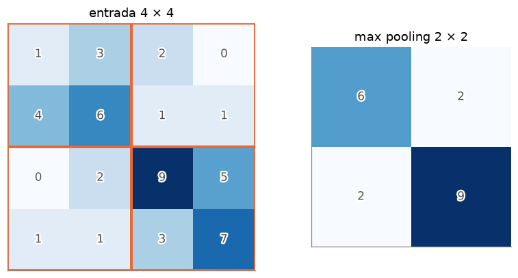
🗂️ Ficha: Convolução e CNN (LeNet-5)
Ano 1989 (primeira CNN treinada com backprop, LeCun) e 1998 (LeNet-5) Antiga ou nova? Antiga: a ideia tem mais de 35 anos, mas a convolução continua em praticamente todo modelo de visão Tipo de treino supervisionado: imagens com rótulos (no caso da LeNet-5, dígitos de cheques bancários) Por que é importante provou que filtros aprendidos superam filtros desenhados à mão; introduziu o padrão conv → pooling → camadas densas Pontos fortes poucos parâmetros (compartilhamento de pesos), noção de vizinhança, invariância a pequenos deslocamentos; funciona bem com poucos dados Limitações cada filtro só enxerga uma região pequena (campo receptivo local); relações entre partes distantes da imagem exigem muitas camadas Ainda é usada? a operação, sim, em todo lugar; a LeNet-5 em si é um exemplo didático
Uma CNN clássica tem duas metades:
Flatten) e passa por camadas densas, como no MLP das aulas anteriores.Vamos montar a LeNet-5 e acompanhar o formato do tensor camada por camada:
lenet = nn.Sequential(
nn.Conv2d(1, 6, kernel_size=5, padding=2), nn.ReLU(), nn.MaxPool2d(2), # bloco 1
nn.Conv2d(6, 16, kernel_size=5), nn.ReLU(), nn.MaxPool2d(2), # bloco 2
nn.Flatten(), # mapa vetor #FC
nn.Linear(16 * 5 * 5, 120), nn.ReLU(), # camadas densas FULLY CONNECTED LAYER
nn.Linear(120, 84), nn.ReLU(),
nn.Linear(84, 10),
)
x = torch.zeros(1, 1, 28, 28)
linhas = [{"camada": "entrada", "formato da saída": tuple(x.shape), "parâmetros": 0}]
for camada in lenet:
x = camada(x)
linhas.append({"camada": camada.__class__.__name__, "formato da saída": tuple(x.shape),
"parâmetros": sum(p.numel() for p in camada.parameters())})
tabela = pd.DataFrame(linhas)
tabela| camada | formato da saída | parâmetros | |
|---|---|---|---|
| 0 | entrada | (1, 1, 28, 28) | 0 |
| 1 | Conv2d | (1, 6, 28, 28) | 156 |
| 2 | ReLU | (1, 6, 28, 28) | 0 |
| 3 | MaxPool2d | (1, 6, 14, 14) | 0 |
| 4 | Conv2d | (1, 16, 10, 10) | 2416 |
| 5 | ReLU | (1, 16, 10, 10) | 0 |
| 6 | MaxPool2d | (1, 16, 5, 5) | 0 |
| 7 | Flatten | (1, 400) | 0 |
| 8 | Linear | (1, 120) | 48120 |
| 9 | ReLU | (1, 120) | 0 |
| 10 | Linear | (1, 84) | 10164 |
| 11 | ReLU | (1, 84) | 0 |
| 12 | Linear | (1, 10) | 850 |
conv_params = sum(p.numel() for c in lenet if isinstance(c, nn.Conv2d) for p in c.parameters())
dense_params = sum(p.numel() for c in lenet if isinstance(c, nn.Linear) for p in c.parameters())
total = conv_params + dense_params
fig, ax = plt.subplots(figsize=(9, 2.2))
ax.barh([0], [conv_params], color=AZUL, height=0.5, label=f"convolucionais: {conv_params:,} ({conv_params / total:.0%})")
ax.barh([0], [dense_params], left=[conv_params], color=LARANJA, height=0.5, label=f"densas: {dense_params:,} ({dense_params / total:.0%})")
ax.set(yticks=[], xlabel="número de parâmetros", title=f"Onde estão os {total:,} parâmetros da LeNet-5?")
ax.legend(frameon=False, loc="upper center", bbox_to_anchor=(0.5, -0.45), ncols=2)
ax.grid(axis="y", visible=False)
plt.show()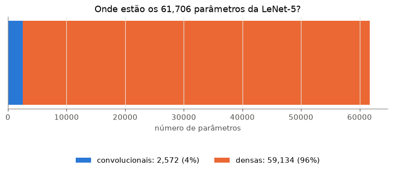
Uma informação interessante: as camadas convolucionais fazem quase todo o “trabalho de enxergar”, mas têm só ~4% dos parâmetros. A maior parte do modelo está nas camadas densas do final, logo depois do Flatten. Em redes maiores isso piora: na VGG-16, ~90% dos 138 milhões de parâmetros estão nas três camadas densas. Veremos adiante como as arquiteturas modernas resolveram isso.
Treinamos a LeNet-5 por uma época no MNIST (cerca de 10 segundos) e olhamos para dentro dela.
mnist = datasets.MNIST("data", train=True, download=True, transform=transforms.ToTensor())
X_mnist = mnist.data.float().div(255).unsqueeze(1)
y_mnist = mnist.targets
torch.manual_seed(0)
lenet = lenet.to(DEVICE_PEQUENO)
otimizador = torch.optim.Adam(lenet.parameters(), lr=1e-3)
inicio = time.time()
for lote in torch.randperm(50000).split(128):
otimizador.zero_grad()
perda = F.cross_entropy(lenet(X_mnist[lote].to(DEVICE_PEQUENO)), y_mnist[lote].to(DEVICE_PEQUENO))
perda.backward()
otimizador.step()
with torch.no_grad():
acc = (lenet(X_mnist[50000:].to(DEVICE_PEQUENO)).argmax(1).cpu() == y_mnist[50000:]).float().mean()
print(f"LeNet-5, 1 época: acurácia de validação = {acc:.2%} ({time.time() - inicio:.0f} s)")LeNet-5, 1 época: acurácia de validação = 96.61% (4 s)digito = X_mnist[50000:50001].to(DEVICE_PEQUENO) # um dígito da validação
lenet[:3](digito).shapetorch.Size([1, 6, 14, 14])digito = X_mnist[50000:50001].to(DEVICE_PEQUENO)
with torch.no_grad():
mapas1 = lenet[:3](digito)[0].cpu() # depois do bloco 1: (6, 14, 14)
mapas2 = lenet[:6](digito)[0].cpu() # depois do bloco 2: (16, 5, 5)
filtros1 = lenet[0].weight.detach().cpu()[:, 0]
fig = plt.figure(figsize=(16, 6.5))
grade = fig.add_gridspec(3, 16, height_ratios=[1, 1, 1])
ax = fig.add_subplot(grade[:, :3]); ax.imshow(digito[0, 0].cpu(), cmap="gray_r"); ax.set_title("entrada 28 × 28"); ax.axis("off")
for k in range(6):
ax = fig.add_subplot(grade[0, 4 + 2 * k:6 + 2 * k]); ax.imshow(filtros1[k], cmap="RdBu_r"); ax.axis("off")
if k == 0: ax.set_title("6 filtros aprendidos (5 × 5)", loc="left", fontsize=10)
ax = fig.add_subplot(grade[1, 4 + 2 * k:6 + 2 * k]); ax.imshow(mapas1[k], cmap="viridis"); ax.axis("off")
if k == 0: ax.set_title("bloco 1: 6 mapas 14 × 14", loc="left", fontsize=10)
for k in range(12):
ax = fig.add_subplot(grade[2, 4 + k]); ax.imshow(mapas2[k], cmap="viridis"); ax.axis("off")
if k == 0: ax.set_title("bloco 2: 16 mapas 5 × 5 (12 mostrados)", loc="left", fontsize=10)
plt.suptitle("Dentro da LeNet-5: cada camada vê a imagem de um jeito mais abstrato")
plt.show()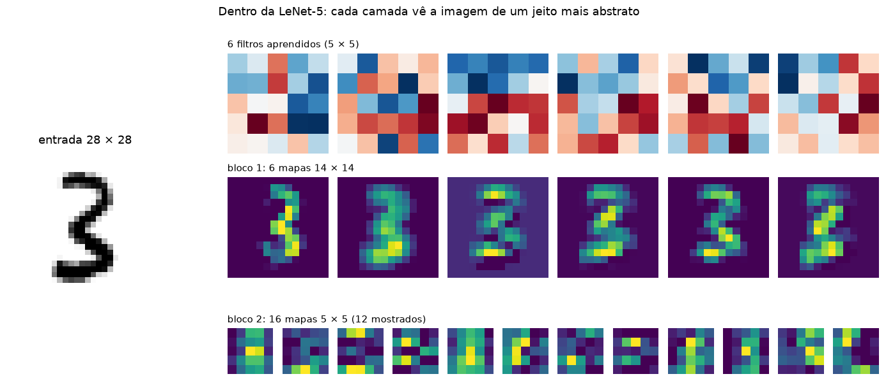
No bloco 1, cada mapa ainda se parece com o dígito: são versões filtradas (bordas em direções diferentes). No bloco 2, os mapas são pequenos e abstratos: cada pixel resume uma região grande da imagem original.
O campo receptivo é o pedaço da imagem original que influencia um pixel de um mapa. Cada convolução e cada pooling aumentam esse pedaço. É por isso que redes profundas conseguem reconhecer objetos inteiros com filtros pequenos: as primeiras camadas veem bordas, as do meio veem partes (olhos, rodas, telhados) e as últimas veem objetos.
def campo_receptivo(camadas):
"""camadas: lista de (nome, kernel, stride). Devolve o campo receptivo depois de cada uma."""
r, salto, linhas = 1, 1, []
for nome, k, s in camadas:
r = r + (k - 1) * salto
salto *= s
linhas.append({"camada": nome, "campo receptivo (pixels)": f"{r} × {r}"})
return pd.DataFrame(linhas)
print("LeNet-5:")
display(campo_receptivo([("conv 5×5", 5, 1), ("pool 2×2", 2, 2), ("conv 5×5", 5, 1), ("pool 2×2", 2, 2)]))
print("10 convoluções 3×3 seguidas, com um pool 2×2 a cada 2:")
display(campo_receptivo([(f"conv 3×3 #{i + 1}" if i % 3 < 2 else "pool 2×2", 3 if i % 3 < 2 else 2, 1 if i % 3 < 2 else 2)
for i in range(15)]).tail(4))LeNet-5:| camada | campo receptivo (pixels) | |
|---|---|---|
| 0 | conv 5×5 | 5 × 5 |
| 1 | pool 2×2 | 6 × 6 |
| 2 | conv 5×5 | 14 × 14 |
| 3 | pool 2×2 | 16 × 16 |
10 convoluções 3×3 seguidas, com um pool 2×2 a cada 2:| camada | campo receptivo (pixels) | |
|---|---|---|
| 11 | pool 2×2 | 76 × 76 |
| 12 | conv 3×3 #13 | 108 × 108 |
| 13 | conv 3×3 #14 | 140 × 140 |
| 14 | pool 2×2 | 156 × 156 |
Por 14 anos, CNNs como a LeNet ficaram restritas a problemas pequenos. Em 2012 três coisas se juntaram: um dataset enorme com rótulos (ImageNet, 1,2 milhão de imagens, 1.000 classes), GPUs e algumas ideias simples (ReLU, dropout). O resultado foi a AlexNet, e a partir dela a regra parecia ser: quanto mais fundo, melhor.
🗂️ Ficha: AlexNet
Ano 2012 (Krizhevsky, Sutskever e Hinton) Antiga ou nova? Antiga, mas é o marco zero do Deep Learning moderno Tipo de treino supervisionado no ImageNet (1,2 milhão de imagens rotuladas, 1.000 classes), em 2 GPUs Por que é importante venceu o desafio ImageNet 2012 com uma margem enorme (erro top-5 de ~15%, contra ~26% do 2º lugar) e convenceu a comunidade de que redes profundas funcionam Pontos fortes popularizou a ReLU (treino muito mais rápido que com sigmoide), o dropout e o treino em GPU Limitações 8 camadas e ~60 milhões de parâmetros, a maioria nas camadas densas; filtros grandes (11 × 11) e muitos detalhes ad hoc Ainda é usada? não em produção; tem valor histórico
🗂️ Ficha: VGG
Ano 2014 (Simonyan e Zisserman, Oxford) Antiga ou nova? Antiga Tipo de treino supervisionado no ImageNet Por que é importante mostrou que profundidade importa (16 a 19 camadas) e que basta empilhar convoluções 3 × 3: duas 3 × 3 têm o campo receptivo de uma 5 × 5 com menos parâmetros Pontos fortes arquitetura simples e regular, fácil de entender e de implementar; muito usada como extratora de características Limitações pesada: ~138 milhões de parâmetros (VGG-16), ~90% nas camadas densas; lenta; não dá para ir muito mais fundo sem o treino degradar Ainda é usada? pouco; aparece em perceptual loss e em exemplos didáticos
Se profundidade ajuda, por que não 100 camadas? Os autores da ResNet perceberam algo estranho: a partir de certo ponto, redes mais profundas ficavam piores, inclusive no treino. Não era overfitting (que piora só a validação): a rede simplesmente não conseguia ser otimizada. O sinal (e o gradiente) precisa atravessar dezenas de camadas, e se degrada no caminho.
Em vez de pedir para um bloco de camadas aprender a transformação completa \(H(x)\), a ResNet pede para ele aprender só a diferença (o resíduo) \(F(x) = H(x) - x\), e soma a entrada de volta:
\[\text{saída} = \text{ReLU}\big(F(x) + x\big)\]
x ──────────────────────────┐ (atalho: a entrada passa direto)
│ │
▼ │
conv 3×3 → BatchNorm → ReLU │
▼ │
conv 3×3 → BatchNorm │
▼ │
+ ◄─────────────────────────┘
▼
ReLUDuas consequências:
Em código, a diferença entre um bloco comum e um bloco residual é um + x:
class Bloco(nn.Module):
"""Bloco com duas convoluções 3×3. residual=True adiciona a skip connection."""
def __init__(self, canais, residual=True):
super().__init__()
self.residual = residual
self.conv1 = nn.Conv2d(canais, canais, 3, padding=1, bias=False)
self.bn1 = nn.BatchNorm2d(canais)
self.conv2 = nn.Conv2d(canais, canais, 3, padding=1, bias=False)
self.bn2 = nn.BatchNorm2d(canais)
def forward(self, x):
y = self.bn2(self.conv2(F.relu(self.bn1(self.conv1(x)))))
if self.residual:
y = y + x # skip connection: soma a entrada de volta
return F.relu(y)
class RedeProfunda(nn.Module):
def __init__(self, n_blocos, residual, canais=16):
super().__init__()
self.entrada = nn.Sequential(nn.Conv2d(1, canais, 3, padding=1, bias=False), nn.BatchNorm2d(canais), nn.ReLU())
self.blocos = nn.Sequential(*[Bloco(canais, residual) for _ in range(n_blocos)])
self.saida = nn.Linear(canais, 10)
def forward(self, x):
x = self.blocos(self.entrada(x))
return self.saida(x.mean(dim=(2, 3))) # global average pooling (veja a seção 2.6)
for n_blocos in [10, 28]:
rede = RedeProfunda(n_blocos, residual=True)
print(f"{n_blocos} blocos = {2 * n_blocos + 2} camadas com pesos, {sum(p.numel() for p in rede.parameters()):,} parâmetros")10 blocos = 22 camadas com pesos, 47,066 parâmetros
28 blocos = 58 camadas com pesos, 131,162 parâmetrosTreinamos quatro redes no MNIST (reduzido para 14 × 14, para ser rápido), com exatamente o mesmo número de parâmetros, o mesmo otimizador e os mesmos lotes:
(Esta célula leva cerca de 2 minutos.)
X_peq = F.avg_pool2d(X_mnist[:10000], 2) # 14 × 14 para o experimento ser rápido
y_peq = y_mnist[:10000]
def experimento(n_blocos, residual, passos=300):
torch.manual_seed(0)
rede = RedeProfunda(n_blocos, residual).to(DEVICE_PEQUENO)
# norma do gradiente em cada bloco, logo no início (antes de treinar)
F.cross_entropy(rede(X_peq[:256].to(DEVICE_PEQUENO)), y_peq[:256].to(DEVICE_PEQUENO)).backward()
grad_blocos = [b.conv1.weight.grad.norm().item() for b in rede.blocos]
rede.zero_grad()
otimizador = torch.optim.SGD(rede.parameters(), lr=0.05, momentum=0.9)
gerador = torch.Generator().manual_seed(0)
perdas = []
for _ in range(passos):
idx = torch.randint(0, 9000, (64,), generator=gerador)
otimizador.zero_grad()
perda = F.cross_entropy(rede(X_peq[idx].to(DEVICE_PEQUENO)), y_peq[idx].to(DEVICE_PEQUENO))
perda.backward()
otimizador.step()
perdas.append(perda.item())
rede.eval()
with torch.no_grad():
acc = (rede(X_peq[9000:].to(DEVICE_PEQUENO)).argmax(1).cpu() == y_peq[9000:]).float().mean().item()
return {"perdas": np.array(perdas), "grad": grad_blocos, "acc": acc}
inicio = time.time()
resultados = {}
for n_blocos in [10, 28]:
for residual in [False, True]:
nome = f"{2 * n_blocos + 2} camadas, {'residual' if residual else 'comum'}"
resultados[nome] = experimento(n_blocos, residual)
print(f"{nome:<26} acurácia de validação = {resultados[nome]['acc']:.1%}")
print(f"({time.time() - inicio:.0f} s)")22 camadas, comum acurácia de validação = 81.7%
22 camadas, residual acurácia de validação = 92.2%
58 camadas, comum acurácia de validação = 23.4%
58 camadas, residual acurácia de validação = 92.6%
(137 s)estilos = {"22 camadas, comum": (CINZA, "--"), "22 camadas, residual": (CINZA, "-"),
"58 camadas, comum": (LARANJA, "--"), "58 camadas, residual": (AZUL, "-")}
suaviza = lambda s, j=20: np.convolve(s, np.ones(j) / j, mode="valid")
fig, axes = plt.subplots(1, 3, figsize=(17, 4.5), width_ratios=[1.3, 1, 0.8])
for nome, r in resultados.items():
cor, ls = estilos[nome]
axes[0].plot(suaviza(r["perdas"]), color=cor, ls=ls, lw=2, label=nome)
axes[0].set(xlabel="passo de treino", ylabel="perda de treino (média móvel)", title="Perda de TREINO")
axes[0].legend(frameon=False)
for nome in ["58 camadas, comum", "58 camadas, residual"]:
cor, ls = estilos[nome]
axes[1].plot(range(1, 29), resultados[nome]["grad"], color=cor, ls=ls, lw=2, marker="o", ms=4, label=nome)
axes[1].set(yscale="log", xlabel="bloco (1 = perto da entrada)", ylabel="norma do gradiente",
title="Gradiente em cada bloco, no início")
axes[1].legend(frameon=False)
nomes = list(resultados)
accs = [resultados[k]["acc"] for k in nomes]
axes[2].barh(nomes[::-1], accs[::-1], color=[estilos[k][0] for k in nomes[::-1]], height=0.6)
for y, v in enumerate(accs[::-1]):
axes[2].text(v + 0.01, y, f"{v:.0%}", va="center", color=TINTA)
axes[2].set(xlim=(0, 1.1), xlabel="acurácia de validação", title="Resultado")
axes[2].grid(axis="y", visible=False)
plt.tight_layout()
plt.show()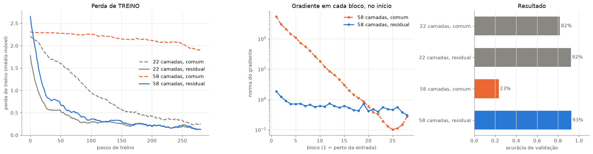
Leitura:
Dois detalhes que aparecem nas ResNets reais:
stride=2), \(x\) e \(F(x)\) não têm o mesmo formato e não podem ser somados. A solução é passar \(x\) por uma convolução 1 × 1 no atalho.conv 1×1 (reduz canais) → conv 3×3 → conv 1×1 (expande). Fica mais barato que duas convoluções 3 × 3 com muitos canais.class BlocoBottleneck(nn.Module):
"""Bloco da ResNet-50: 1×1 (reduz) - 3×3 - 1×1 (expande), com projeção no atalho se necessário."""
def __init__(self, entrada, meio, saida, stride=1):
super().__init__()
self.ramo = nn.Sequential(
nn.Conv2d(entrada, meio, 1, bias=False), nn.BatchNorm2d(meio), nn.ReLU(),
nn.Conv2d(meio, meio, 3, stride=stride, padding=1, bias=False), nn.BatchNorm2d(meio), nn.ReLU(),
nn.Conv2d(meio, saida, 1, bias=False), nn.BatchNorm2d(saida),
)
self.atalho = nn.Identity()
if stride != 1 or entrada != saida: # formatos diferentes: projeção 1×1 no atalho
self.atalho = nn.Sequential(nn.Conv2d(entrada, saida, 1, stride=stride, bias=False), nn.BatchNorm2d(saida))
def forward(self, x):
return F.relu(self.ramo(x) + self.atalho(x))
x = torch.randn(1, 256, 56, 56)
for nome, bloco in {"mesmo formato (atalho = identidade)": BlocoBottleneck(256, 64, 256),
"reduz e aprofunda (atalho = conv 1×1, stride 2)": BlocoBottleneck(256, 128, 512, stride=2)}.items():
print(f"{nome:<48} {tuple(x.shape)} → {tuple(bloco(x).shape)} {sum(p.numel() for p in bloco.parameters()):,} parâmetros")
dois_3x3 = 2 * (256 * 256 * 9)
print(f"\ncomparação: duas convoluções 3×3 com 256 canais teriam {dois_3x3:,} parâmetros")mesmo formato (atalho = identidade) (1, 256, 56, 56) → (1, 256, 56, 56) 70,400 parâmetros
reduz e aprofunda (atalho = conv 1×1, stride 2) (1, 256, 56, 56) → (1, 512, 28, 28) 379,392 parâmetros
comparação: duas convoluções 3×3 com 256 canais teriam 1,179,648 parâmetrosLembra que na LeNet e na VGG quase todos os parâmetros estavam nas camadas densas depois do Flatten?
A ResNet troca isso pelo global average pooling (GAP): tira a média de cada mapa inteiro, transformando (2048, 7, 7) em um vetor de 2.048 números, e só então aplica uma camada linear.
canais, h, w, classes = 2048, 7, 7, 1000
flatten_denso = canais * h * w * classes
gap_denso = canais * classes
print(f"Flatten (2048 × 7 × 7 = {canais * h * w:,}) → densa de 1000: {flatten_denso:>12,} pesos")
print(f"GAP (2048) → densa de 1000: {gap_denso:>12,} pesos ({flatten_denso // gap_denso}× menos)")Flatten (2048 × 7 × 7 = 100,352) → densa de 1000: 100,352,000 pesos
GAP (2048) → densa de 1000: 2,048,000 pesos (49× menos)🗂️ Ficha: ResNet (Residual Network)
Ano 2015 (He, Zhang, Ren e Sun, Microsoft Research) Antiga ou nova? Clássica: tem 10 anos e ainda é uma das redes mais usadas como ponto de partida Tipo de treino supervisionado no ImageNet; hoje existem versões treinadas de forma auto-supervisionada Por que é importante as skip connections resolveram o problema da degradação e permitiram treinar redes com 50, 101, 152 e até 1.000 camadas; venceu o ImageNet 2015 (erro top-5 de 3,6%, abaixo do estimado para humanos). A ideia residual está hoje em praticamente toda arquitetura, inclusive nos Transformers Pontos fortes treina de forma estável em grande profundidade; GAP em vez de densas gigantes (ResNet-50 tem ~25 milhões de parâmetros, contra 138 da VGG-16); ótimo backbone para outras tarefas (detecção, segmentação) Limitações continua sendo uma CNN: campo receptivo local, relações de longa distância só nas camadas finais; em grandes volumes de dados, Transformers costumam superá-la Ainda é usada? muito: como baseline, como backbone de U-Nets e detectores, e em sensoriamento remoto
O Hugging Face é o “GitHub dos modelos de IA”. O Hub hospeda, de forma aberta:
| O quê | Exemplos |
|---|---|
| Modelos (mais de um milhão) | ResNets, ViTs, LLMs, modelos de fundação para observação da Terra (Prithvi, Clay, DOFA) |
| Datasets | imagens rotuladas, textos, séries temporais, imagens de satélite |
| Spaces | aplicativos de demonstração rodando no navegador |
Cada modelo tem um model card: quem treinou, com que dados, licença, métricas e como usar. Em vez de treinar uma ResNet-50 do zero (dias de GPU no ImageNet), baixamos os pesos prontos em segundos.
Bibliotecas que conversam com o Hub:
| Biblioteca | Para quê |
|---|---|
huggingface_hub |
buscar, baixar e enviar arquivos, modelos e datasets |
timm (PyTorch Image Models) |
centenas de arquiteturas de visão (ResNet, ConvNeXt, ViT, DINOv2) com pesos pré-treinados |
transformers |
modelos de linguagem, de visão e multimodais |
datasets |
carregar datasets do Hub com uma linha |
Para baixar modelos e datasets públicos, você não precisa de conta. A conta e um token são necessários para: modelos privados ou com acesso restrito (gated, como alguns LLMs), enviar seus próprios modelos e datasets, e ter limites de download maiores.
hf auth login (o token fica salvo no computador);from huggingface_hub import login; login();HF_TOKEN (por exemplo no seu .env). Nunca coloque o token no código ou no GitHub.Sem token, o Hub mostra um aviso pedindo um HF_TOKEN para ter limites maiores. Para esta aula pode ignorar (deixamos o aviso desligado no início do notebook).
from huggingface_hub import HfApi, hf_hub_download, whoami
if os.environ.get("HF_TOKEN"):
print(f"conectado ao Hugging Face como: {whoami()['name']}")
else:
print("sem token: tudo bem para baixar modelos e datasets públicos (o caso desta aula)")sem token: tudo bem para baixar modelos e datasets públicos (o caso desta aula)A mesma busca do site pode ser feita no código. As ResNet-50 do timm mais baixadas:
api = HfApi()
for modelo in api.list_models(search="resnet50", filter="timm", sort="downloads", limit=6):
print(f"{modelo.id:<45} {modelo.downloads:>12,} downloads")timm/resnet50.a1_in1k 1,487,127 downloads
timm/wide_resnet50_2.racm_in1k 613,770 downloads
timm/resnet50.fb_swsl_ig1b_ft_in1k 163,749 downloads
timm/resnet50d.ra2_in1k 123,581 downloads
timm/resnet50_gn.a1h_in1k 60,670 downloads
timm/resnet50.tv_in1k 35,150 downloadsPara o estudo de caso vamos usar o LandCover.ai: ortofotos aéreas da Polônia (25–50 cm por pixel) com máscaras de 5 classes (fundo, edificação, floresta, água, estrada). A versão isaaccorley/landcoverai tem 100 recortes de 512 × 512 pixels (70 de treino, 15 de validação, 15 de teste), em um zip de 9 MB.
hf_hub_download baixa o arquivo para um cache local: na segunda vez, não baixa de novo.
Fonte: Boguszewski et al. (2021), LandCover.ai, licença CC BY-NC-SA 4.0 (uso não comercial).
caminho_zip = hf_hub_download(repo_id="isaaccorley/landcoverai", filename="landcoverai100.zip", repo_type="dataset")
print(f"arquivo no cache: {caminho_zip}")
PASTA_LC = "data/landcoverai"
if not os.path.exists(PASTA_LC):
zipfile.ZipFile(caminho_zip).extractall(PASTA_LC)
ids = {s: open(f"{PASTA_LC}/{s}.txt").read().split() for s in ["train", "val", "test"]}
print({s: len(v) for s, v in ids.items()})arquivo no cache: /Users/macuser/.cache/huggingface/hub/datasets--isaaccorley--landcoverai/snapshots/5cdf9299bd6c1232506cf79373df01f6e6596b50/landcoverai100.zip
{'train': 70, 'val': 15, 'test': 15}Com o timm, carregar um modelo do Hub é uma linha: o prefixo hf-hub: diz de onde baixar. Usamos o timm/resnet50.a1_in1k: uma ResNet-50 treinada de forma supervisionada no ImageNet-1k (1.000 classes) com a receita moderna “A1” do artigo ResNet strikes back (2021).
import timm
from timm.data import ImageNetInfo
inicio = time.time()
resnet50 = timm.create_model("hf-hub:timm/resnet50.a1_in1k", pretrained=True).eval()
print(f"carregada em {time.time() - inicio:.0f} s: {sum(p.numel() for p in resnet50.parameters()) / 1e6:.1f} milhões de parâmetros")
# o próprio modelo informa como as imagens devem ser preparadas (tamanho, normalização)
config = timm.data.resolve_data_config({}, model=resnet50)
transformacao = timm.data.create_transform(**config)
print(config)carregada em 1 s: 25.6 milhões de parâmetros
{'input_size': [3, 224, 224], 'interpolation': 'bicubic', 'mean': [0.485, 0.456, 0.406], 'std': [0.229, 0.224, 0.225], 'crop_pct': 0.95, 'crop_mode': 'center'}Vamos classificar quatro imagens: três fotos do scikit-image e um recorte aéreo do LandCover.ai.
classes_imagenet = ImageNetInfo()
imagens = {
"gato": data.chelsea(),
"café": data.coffee(),
"astronauta": data.astronaut(),
"foto aérea": io.imread(f"{PASTA_LC}/output/{ids['test'][0]}.jpg"),
}
fig, axes = plt.subplots(1, 4, figsize=(17, 5))
for ax, (nome, img) in zip(axes, imagens.items()):
x = transformacao(Image.fromarray(img)).unsqueeze(0)
with torch.no_grad():
prob = resnet50(x).softmax(dim=1)[0]
top = prob.topk(3)
texto = "\n".join(f"{p:.0%} {classes_imagenet.index_to_description(int(i))[:28]}" for p, i in zip(top.values, top.indices))
ax.imshow(img)
ax.set_title(nome, fontsize=12)
ax.text(0.5, -0.04, texto, transform=ax.transAxes, ha="center", va="top", fontsize=9.5, color=TINTA)
ax.axis("off")
plt.suptitle("ResNet-50 pré-treinada no ImageNet: top-3 previsões", y=0.98)
plt.tight_layout()
plt.show()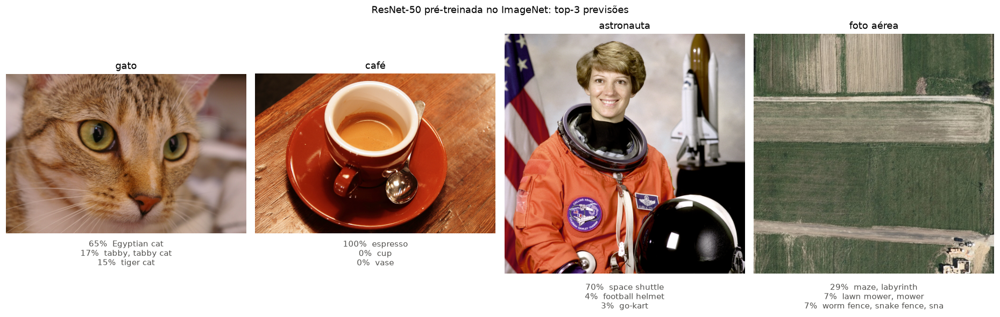
Para fotos do dia a dia, a ResNet-50 acerta ou chega perto: o ImageNet não tem a classe “astronauta”, então ela aponta o ônibus espacial ao fundo. Para a foto aérea, as previsões não fazem sentido: o ImageNet tem 1.000 classes de objetos fotografados de lado (cães, xícaras, carros), e nenhuma delas é “floresta vista de cima” ou “telhado”. É uma mudança de domínio (domain shift).
Isso significa que a ResNet-50 é inútil para imagens aéreas? Não. Os filtros das primeiras camadas detectam bordas, texturas e cores, coisas que existem em qualquer imagem. Veja os 64 filtros 7 × 7 da primeira camada:
filtros = resnet50.conv1.weight.detach() # (64, 3, 7, 7)
filtros = (filtros - filtros.amin(dim=(1, 2, 3), keepdim=True)) / (filtros.amax(dim=(1, 2, 3), keepdim=True) - filtros.amin(dim=(1, 2, 3), keepdim=True))
fig, axes = plt.subplots(4, 16, figsize=(16, 4.3))
for ax, f in zip(axes.flat, filtros):
ax.imshow(f.permute(1, 2, 0))
ax.axis("off")
plt.suptitle("Os 64 filtros RGB 7 × 7 aprendidos pela 1ª camada da ResNet-50", y=1.0)
plt.show()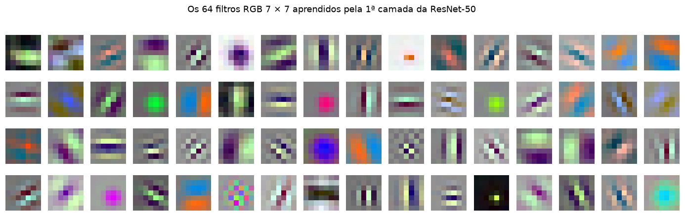
Bordas em várias direções, manchas de cor, padrões listrados: a rede aprendeu sozinha filtros muito parecidos com os da seção 1.3. Essas características genéricas são exatamente o que queremos reaproveitar. Esse é o princípio da transferência de aprendizado (transfer learning).
Na Parte 4 vamos colocar essas características para trabalhar em um problema de segmentação de imagens aéreas.
Até aqui, todas as redes classificaram imagens inteiras: “esta imagem é um 7”, “esta imagem é um gato”. Em sensoriamento remoto, quase sempre queremos mais: onde está a floresta, quais pixels são água, onde estão as edificações. Isso é segmentação semântica: uma classe para cada pixel.
| Tarefa | Pergunta | Saída da rede |
|---|---|---|
| Classificação | “o que há nesta imagem?” | um vetor de classes: (lote, n_classes) |
| Segmentação semântica | “a que classe pertence cada pixel?” | um mapa de classes: (lote, n_classes, H, W) |
Para isso a rede precisa fazer duas coisas que parecem contraditórias: entender o contexto (o que exige reduzir a imagem, como faz a ResNet) e devolver a resolução original, pixel a pixel. A U-Net resolve as duas.
🗂️ Ficha: U-Net
Ano 2015 (Ronneberger, Fischer e Brox), criada para segmentar células em imagens de microscopia Antiga ou nova? Clássica, mas continua no estado da arte de segmentação; é também a base dos modelos de difusão que geram imagens Tipo de treino supervisionado: cada pixel da imagem tem um rótulo (máscara de segmentação) Por que é importante resolveu a segmentação semântica (uma classe por pixel) com poucas imagens rotuladas; virou o padrão em medicina e em sensoriamento remoto (uso do solo, edificações, água, desmatamento, queimadas) Pontos fortes formato em U: o encoder entende o que há na imagem, o decoder recupera onde; as skip connections longas levam os detalhes finos do encoder direto ao decoder; aceita qualquer backbone pré-treinado como encoder Limitações precisa de máscaras rotuladas pixel a pixel (caras de produzir); o decoder pode ser pesado em imagens grandes; contexto global limitado pelo encoder convolucional Ainda é usada? muito: é provavelmente a arquitetura mais usada em segmentação de imagens de satélite
A U-Net tem a forma de um U:
entrada (3, 256, 256) saída (5, 256, 256)
│ ▲ conv 1×1
enc1 DuplaConv → (16, 256, 256) ──────────── skip ────────────► dec1 concat + DuplaConv → (16, 256, 256)
│ max pool ▲ ConvTranspose 2×2
enc2 DuplaConv → (32, 128, 128) ────────── skip ──────────► dec2 concat + DuplaConv → (32, 128, 128)
│ max pool ▲
enc3 DuplaConv → (64, 64, 64) ──────── skip ────────► dec3 concat + DuplaConv → (64, 64, 64)
│ max pool ▲
enc4 DuplaConv → (128, 32, 32) ────── skip ──────► dec4 concat + DuplaConv → (128, 32, 32)
│ max pool ▲
└───────────────────────► fundo DuplaConv → (256, 16, 16) ──────────────────┘Três peças de código:
| Peça | O que faz |
|---|---|
DuplaConv |
duas convoluções 3 × 3, cada uma com BatchNorm e ReLU: o “tijolo” da U-Net |
nn.MaxPool2d(2) |
desce um nível: metade da altura e da largura |
Subida |
nn.ConvTranspose2d (uma convolução que aumenta a imagem, com pesos aprendidos) + concatenação com a skip + DuplaConv |
class DuplaConv(nn.Sequential):
"""conv 3×3 → BatchNorm → ReLU, duas vezes. Mantém a altura e a largura."""
def __init__(self, entrada, saida):
super().__init__(
nn.Conv2d(entrada, saida, 3, padding=1, bias=False), nn.BatchNorm2d(saida), nn.ReLU(inplace=True),
nn.Conv2d(saida, saida, 3, padding=1, bias=False), nn.BatchNorm2d(saida), nn.ReLU(inplace=True),
)
class Decoder(nn.Module):
"""Dobra o tamanho, concatena a skip connection do encoder e aplica uma DuplaConv."""
def __init__(self, entrada, saida):
super().__init__()
self.sobe = nn.ConvTranspose2d(entrada, saida, kernel_size=2, stride=2)
self.conv = DuplaConv(2 * saida, saida) # 2×: os canais que sobem + os canais da skip
def forward(self, x, skip):
x = self.sobe(x)
x = torch.cat([x, skip], dim=1) # a skip connection da U-Net: concatenação de canais
return self.conv(x)
class UNet(nn.Module):
def __init__(self, canais_entrada=3, n_classes=5, base=16):
super().__init__()
c = [base, 2 * base, 4 * base, 8 * base, 16 * base] # 16, 32, 64, 128, 256 canais
self.pool = nn.MaxPool2d(2)
self.enc1, self.enc2 = DuplaConv(canais_entrada, c[0]), DuplaConv(c[0], c[1])
self.enc3, self.enc4 = DuplaConv(c[1], c[2]), DuplaConv(c[2], c[3])
self.fundo = DuplaConv(c[3], c[4])
self.dec4, self.dec3 = Decoder(c[4], c[3]), Decoder(c[3], c[2])
self.dec2, self.dec1 = Decoder(c[2], c[1]), Decoder(c[1], c[0])
self.saida = nn.Conv2d(c[0], n_classes, kernel_size=1) # um "logit" por classe em cada pixel
def forward(self, x, mostra=False):
e1 = self.enc1(x) # encoder: desce
e2 = self.enc2(self.pool(e1))
e3 = self.enc3(self.pool(e2))
e4 = self.enc4(self.pool(e3))
f = self.fundo(self.pool(e4))
d4 = self.dec4(f, e4) # decoder: sobe, recebendo as skips
d3 = self.dec3(d4, e3)
d2 = self.dec2(d3, e2)
d1 = self.dec1(d2, e1)
y = self.saida(d1)
if mostra:
for nome, t in [("entrada", x), ("enc1", e1), ("enc2", e2), ("enc3", e3), ("enc4", e4), ("fundo", f),
("dec4", d4), ("dec3", d3), ("dec2", d2), ("dec1", d1), ("saída", y)]:
print(f"{nome:<8} {str(tuple(t.shape)):<22}")
return y
unet = UNet()
with torch.no_grad():
unet(torch.zeros(1, 3, 256, 256), mostra=True)
print(f"\nparâmetros: {sum(p.numel() for p in unet.parameters()):,} "
f"(a U-Net do artigo original, com base=64, teria {sum(p.numel() for p in UNet(base=64).parameters()):,})")entrada (1, 3, 256, 256)
enc1 (1, 16, 256, 256)
enc2 (1, 32, 128, 128)
enc3 (1, 64, 64, 64)
enc4 (1, 128, 32, 32)
fundo (1, 256, 16, 16)
dec4 (1, 128, 32, 32)
dec3 (1, 64, 64, 64)
dec2 (1, 32, 128, 128)
dec1 (1, 16, 256, 256)
saída (1, 5, 256, 256)
parâmetros: 1,942,645 (a U-Net do artigo original, com base=64, teria 31,037,893)Repare no formato em U nos números: a altura vai de 256 até 16 no fundo e volta a 256, enquanto os canais vão de 16 a 256 e voltam. A saída tem 5 canais (um por classe) com o mesmo tamanho da entrada.
Usamos o LandCover.ai baixado na Parte 3: 100 ortofotos da Polônia com máscaras de 5 classes. Reduzimos as imagens de 512 para 256 pixels para treinar rápido.
NOMES_LC = ["fundo", "edificação", "floresta", "água", "estrada"]
CORES_LC = ["#d9d9d9", "#e34948", "#1baf7a", "#2a78d6", "#eda100"]
cmap_lc = ListedColormap(CORES_LC)
TAMANHO = 256 # reduzimos de 512 para 256 para treinar rápido
def carrega_split(split):
imgs = np.stack([io.imread(f"{PASTA_LC}/output/{i}.jpg") for i in ids[split]])
mascaras = np.stack([io.imread(f"{PASTA_LC}/output/{i}_m.png")[..., 0] for i in ids[split]])
X = torch.tensor(imgs).permute(0, 3, 1, 2).float() / 255 # (N, 3, 512, 512)
Y = torch.tensor(mascaras).long() # (N, 512, 512)
X = F.interpolate(X, size=TAMANHO, mode="bilinear", antialias=True)
Y = F.interpolate(Y[:, None].float(), size=TAMANHO, mode="nearest")[:, 0].long() # máscara: vizinho mais próximo
return X, Y
X_tr, Y_tr = carrega_split("train")
X_te, Y_te = carrega_split("test")
# a mesma normalização usada no pré-treino da ResNet-50 (ImageNet)
media, desvio = torch.tensor(config["mean"])[:, None, None], torch.tensor(config["std"])[:, None, None]
normaliza = lambda x: (x - media) / desvio
print(f"treino: {tuple(X_tr.shape)} {tuple(Y_tr.shape)} teste: {tuple(X_te.shape)}")
frac = torch.bincount(Y_tr.flatten(), minlength=5) / Y_tr.numel()
print("fração de pixels por classe:", {n: f"{f:.1%}" for n, f in zip(NOMES_LC, frac)})treino: (70, 3, 256, 256) (70, 256, 256) teste: (15, 3, 256, 256)
fração de pixels por classe: {'fundo': '63.4%', 'edificação': '1.3%', 'floresta': '29.2%', 'água': '4.0%', 'estrada': '2.0%'}fig, axes = plt.subplots(2, 5, figsize=(16, 6.8))
for k, idx in enumerate([0, 7, 14, 21, 35]):
axes[0, k].imshow(X_tr[idx].permute(1, 2, 0))
axes[1, k].imshow(Y_tr[idx], cmap=cmap_lc, vmin=0, vmax=4, interpolation="nearest")
axes[0, k].axis("off"); axes[1, k].axis("off")
axes[0, 0].set_title("imagem aérea", loc="left")
axes[1, 0].set_title("máscara (rótulo de cada pixel)", loc="left")
for nome, cor in zip(NOMES_LC, CORES_LC):
axes[1, 4].scatter([], [], marker="s", s=120, color=cor, label=nome)
axes[1, 4].legend(frameon=False, loc="upper left", bbox_to_anchor=(1.02, 1))
plt.tight_layout()
plt.show()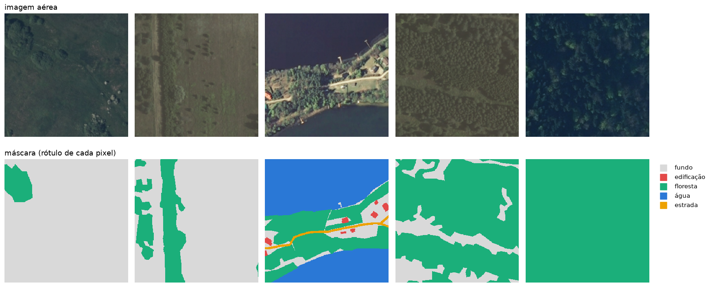
A U-Net devolve, para cada pixel, 5 logits (um por classe). O caminho até a máscara é o mesmo da classificação, só que aplicado a cada pixel:
softmax na dimensão das classes (dim=1) → probabilidades que somam 1 em cada pixel;argmax na mesma dimensão → a classe mais provável de cada pixel = a máscara prevista.A perda também é a mesma entropia cruzada da classificação, calculada em cada pixel e depois tirada a média. O F.cross_entropy aceita isso direto: logits (lote, classes, H, W) e rótulos (lote, H, W).
torch.manual_seed(0)
unet = UNet()
x, y = normaliza(X_tr[:4]), Y_tr[:4]
with torch.no_grad():
logits = unet(x) # (4, 5, 256, 256)
probs = logits.softmax(dim=1) # probabilidades por pixel
mascara = probs.argmax(dim=1) # (4, 256, 256): a classe de cada pixel
perda = F.cross_entropy(logits, y) # média da entropia cruzada em todos os pixels
print(f"entrada {tuple(x.shape)} → logits {tuple(logits.shape)} → máscara {tuple(mascara.shape)}")
print(f"soma das probabilidades em um pixel qualquer: {probs[0, :, 100, 100].sum():.3f}")
print(f"perda da rede ainda NÃO treinada: {perda:.3f} (um chute uniforme entre 5 classes daria ln 5 = {np.log(5):.3f})")
fig, axes = plt.subplots(1, 3, figsize=(12, 4))
axes[0].imshow(X_tr[0].permute(1, 2, 0)); axes[0].set_title("imagem")
axes[1].imshow(Y_tr[0], cmap=cmap_lc, vmin=0, vmax=4, interpolation="nearest"); axes[1].set_title("rótulo real")
axes[2].imshow(mascara[0], cmap=cmap_lc, vmin=0, vmax=4, interpolation="nearest"); axes[2].set_title("U-Net sem treino")
for ax in axes:
ax.axis("off")
plt.tight_layout()
plt.show()entrada (4, 3, 256, 256) → logits (4, 5, 256, 256) → máscara (4, 256, 256)
soma das probabilidades em um pixel qualquer: 1.000
perda da rede ainda NÃO treinada: 1.874 (um chute uniforme entre 5 classes daria ln 5 = 1.609)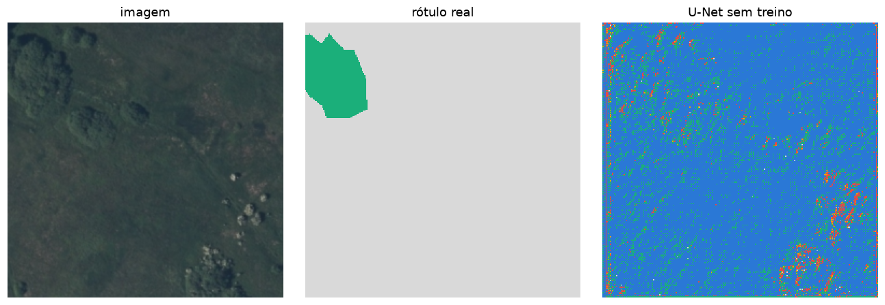
O laço de treino é o de sempre (aula 4). Duas particularidades da segmentação:
A função abaixo treina só os parâmetros com requires_grad=True: vamos reaproveitá-la na seção 4.4 com um encoder congelado. (Cerca de 1 minuto na GPU, 2–3 na CPU.)
def treina_segmentacao(modelo, epocas=20, lote=8, lr=1e-3, nome=""):
torch.manual_seed(0)
modelo = modelo.to(DEVICE)
otimizador = torch.optim.Adam([p for p in modelo.parameters() if p.requires_grad], lr=lr)
gerador = torch.Generator().manual_seed(0)
historico, inicio = [], time.time()
for epoca in range(epocas):
modelo.train()
perdas = []
for idx in torch.randperm(len(X_tr), generator=gerador).split(lote):
x, y = normaliza(X_tr[idx]), Y_tr[idx]
k = int(torch.randint(0, 4, (1,), generator=gerador)) # rotação de k × 90°, igual na imagem e na máscara
x, y = torch.rot90(x, k, dims=(2, 3)), torch.rot90(y, k, dims=(1, 2))
otimizador.zero_grad()
perda = F.cross_entropy(modelo(x.to(DEVICE)), y.to(DEVICE))
perda.backward()
otimizador.step()
perdas.append(perda.item())
historico.append(np.mean(perdas))
print(f"{nome:<32} perda final = {historico[-1]:.3f} ({time.time() - inicio:.0f} s)")
return modelo.eval(), historico
torch.manual_seed(0)
unet_zero, hist_zero = treina_segmentacao(UNet(), nome="U-Net do zero")U-Net do zero perda final = 0.679 (50 s)Com apenas 70 imagens, aprender tudo do zero é difícil: o encoder precisa descobrir sozinho o que são bordas, texturas e formas. A ideia da transferência de aprendizado: trocar o encoder da U-Net pela ResNet-50 pré-treinada da Parte 3, que já sabe extrair essas características, e treinar só o decoder.
O timm entrega o encoder pronto com features_only=True: em vez da classificação, a ResNet-50 devolve os mapas de 5 profundidades, exatamente os níveis que a U-Net precisa para as skip connections.
imagem 256×256 máscara 256×256 (5 classes)
│ ▲
┌───▼──────────── ENCODER (ResNet-50 pré-treinada, congelada) ┐ ┌─── DECODER (treinado) ───┴───┐
│ 64 canais, 128×128 ─────────────── skip ───────────────────────► concat → conv → 32 canais │
│ 256 canais, 64×64 ─────────────── skip ───────────────────────► concat → conv → 64 canais │
│ 512 canais, 32×32 ─────────────── skip ───────────────────────► concat → conv → 128 canais │
│ 1024 canais, 16×16 ─────────────── skip ───────────────────────► concat → conv → 256 canais │
│ 2048 canais, 8×8 ─────────────── (fundo do U) ───────────────► sobe (upsample) ×2 │
└─────────────────────────────────────────────────────────────┘ └──────────────────────────────┘Repare na diferença entre as duas skip connections que vimos nesta aula:
| ResNet | U-Net | |
|---|---|---|
| Distância | curta: pula 2 ou 3 camadas | longa: liga o encoder ao decoder |
| Operação | soma (F(x) + x) |
concatenação de canais (torch.cat) |
| Objetivo | o gradiente fluir em redes profundas | recuperar os detalhes espaciais perdidos no pooling |
encoder_teste = timm.create_model("hf-hub:timm/resnet50.a1_in1k", pretrained=True, features_only=True)
with torch.no_grad():
for mapa, reducao in zip(encoder_teste(torch.zeros(1, 3, TAMANHO, TAMANHO)), encoder_teste.feature_info.reduction()):
print(f"{str(tuple(mapa.shape)):<22} (1/{reducao} do tamanho)")
del encoder_teste(1, 64, 128, 128) (1/2 do tamanho)
(1, 256, 64, 64) (1/4 do tamanho)
(1, 512, 32, 32) (1/8 do tamanho)
(1, 1024, 16, 16) (1/16 do tamanho)
(1, 2048, 8, 8) (1/32 do tamanho)def bloco_decoder(entrada, saida):
return nn.Sequential(
nn.Conv2d(entrada, saida, 3, padding=1, bias=False), nn.BatchNorm2d(saida), nn.ReLU(inplace=True),
nn.Conv2d(saida, saida, 3, padding=1, bias=False), nn.BatchNorm2d(saida), nn.ReLU(inplace=True),
)
class UNetResNet50(nn.Module):
def __init__(self, pre_treinado=True, n_classes=5):
super().__init__()
self.encoder = timm.create_model("hf-hub:timm/resnet50.a1_in1k", pretrained=pre_treinado, features_only=True)
for p in self.encoder.parameters(): # encoder CONGELADO: só o decoder aprende
p.requires_grad = False
self.dec4 = bloco_decoder(2048 + 1024, 256)
self.dec3 = bloco_decoder(256 + 512, 128)
self.dec2 = bloco_decoder(128 + 256, 64)
self.dec1 = bloco_decoder(64 + 64, 32)
self.dec0 = bloco_decoder(32, 16)
self.cabeca = nn.Conv2d(16, n_classes, kernel_size=1) # 1 canal por classe
def forward(self, x):
self.encoder.eval() # BatchNorm do encoder em modo de avaliação (congelado)
with torch.no_grad():
f1, f2, f3, f4, f5 = self.encoder(x) # 1/2, 1/4, 1/8, 1/16, 1/32
sobe = lambda t: F.interpolate(t, scale_factor=2, mode="bilinear", align_corners=False)
x = self.dec4(torch.cat([sobe(f5), f4], dim=1)) # skip connection = concatenação
x = self.dec3(torch.cat([sobe(x), f3], dim=1))
x = self.dec2(torch.cat([sobe(x), f2], dim=1))
x = self.dec1(torch.cat([sobe(x), f1], dim=1))
x = self.dec0(sobe(x))
return self.cabeca(x) # (lote, 5, 256, 256): um "logit" por classe e por pixel
torch.manual_seed(0)
unet50 = UNetResNet50()
treinaveis = sum(p.numel() for p in unet50.parameters() if p.requires_grad)
congelados = sum(p.numel() for p in unet50.parameters() if not p.requires_grad)
print(f"encoder congelado: {congelados / 1e6:.1f} M parâmetros | decoder treinável: {treinaveis / 1e6:.1f} M parâmetros")
unet_pre, hist_pre = treina_segmentacao(unet50, nome="U-Net + ResNet-50 pré-treinada")encoder congelado: 23.5 M parâmetros | decoder treinável: 9.0 M parâmetros
U-Net + ResNet-50 pré-treinada perda final = 0.471 (48 s)Em segmentação, a métrica mais usada é o IoU (Intersection over Union) de cada classe: a área onde previsão e rótulo concordam, dividida pela área total que qualquer um dos dois marcou. O mIoU é a média entre as classes. A acurácia por pixel engana: um modelo que chuta “fundo” em tudo já acerta ~60% dos pixels.
\[\text{IoU}_c = \frac{|\text{previsto}_c \cap \text{real}_c|}{|\text{previsto}_c \cup \text{real}_c|}\]
@torch.no_grad()
def prediz(modelo, X):
return torch.cat([modelo(normaliza(X[i:i + 5]).to(DEVICE)).argmax(dim=1).cpu() for i in range(0, len(X), 5)])
def iou_por_classe(pred, real):
return [((pred == c) & (real == c)).sum().item() / max(((pred == c) | (real == c)).sum().item(), 1) for c in range(5)]
modelos_seg = {"U-Net do zero": unet_zero, "U-Net + ResNet-50 pré-treinada": unet_pre}
predicoes = {nome: prediz(m, X_te) for nome, m in modelos_seg.items()}
avaliacao = pd.DataFrame({nome: iou_por_classe(p, Y_te) + [(p == Y_te).float().mean().item()] for nome, p in predicoes.items()},
index=[f"IoU {c}" for c in NOMES_LC] + ["acurácia por pixel"])
avaliacao.loc["mIoU"] = avaliacao.iloc[:5].mean()
avaliacao.round(3)| U-Net do zero | U-Net + ResNet-50 pré-treinada | |
|---|---|---|
| IoU fundo | 0.775 | 0.906 |
| IoU edificação | 0.000 | 0.000 |
| IoU floresta | 0.437 | 0.870 |
| IoU água | 0.000 | 0.656 |
| IoU estrada | 0.000 | 0.091 |
| acurácia por pixel | 0.735 | 0.919 |
| mIoU | 0.242 | 0.505 |
cores_modelos = {"U-Net do zero": LARANJA, "U-Net + ResNet-50 pré-treinada": AZUL}
fig, axes = plt.subplots(1, 2, figsize=(14, 4), width_ratios=[1, 1.4])
for nome, hist in [("U-Net do zero", hist_zero), ("U-Net + ResNet-50 pré-treinada", hist_pre)]:
axes[0].plot(range(1, len(hist) + 1), hist, color=cores_modelos[nome], lw=2, marker="o", ms=3, label=nome)
axes[0].set(xlabel="época", ylabel="perda de treino", title="Treino")
axes[0].legend(frameon=False)
ious = avaliacao.loc[[f"IoU {c}" for c in NOMES_LC]]
y = np.arange(5)
for desloc, nome in [(0.2, "U-Net + ResNet-50 pré-treinada"), (-0.2, "U-Net do zero")]:
axes[1].barh(y + desloc, ious[nome], height=0.38, color=cores_modelos[nome], label=nome)
for yy, v in enumerate(ious[nome]):
axes[1].text(v + 0.01, yy + desloc, f"{v:.2f}", va="center", fontsize=9, color=TINTA)
axes[1].set(yticks=y, yticklabels=NOMES_LC, xlim=(0, 1.08), xlabel="IoU no teste", title="IoU por classe (15 imagens de teste)")
axes[1].invert_yaxis()
axes[1].grid(axis="y", visible=False)
axes[1].legend(frameon=False, loc="lower right")
plt.tight_layout()
plt.show()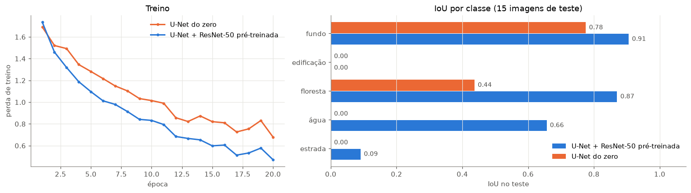
fig, axes = plt.subplots(3, 4, figsize=(14, 10.5))
for linha, idx in enumerate([1, 6, 12]):
paineis = [(X_te[idx].permute(1, 2, 0), "imagem"), (Y_te[idx], "rótulo real")] + \
[(predicoes[nome][idx], nome) for nome in modelos_seg]
for ax, (mapa, titulo) in zip(axes[linha], paineis):
if titulo == "imagem":
ax.imshow(mapa)
else:
ax.imshow(mapa, cmap=cmap_lc, vmin=0, vmax=4, interpolation="nearest")
ax.axis("off")
if linha == 0:
ax.set_title(titulo)
for nome, cor in zip(NOMES_LC, CORES_LC):
axes[0, 3].scatter([], [], marker="s", s=120, color=cor, label=nome)
axes[0, 3].legend(frameon=False, loc="upper left", bbox_to_anchor=(1.02, 1))
plt.tight_layout()
plt.show()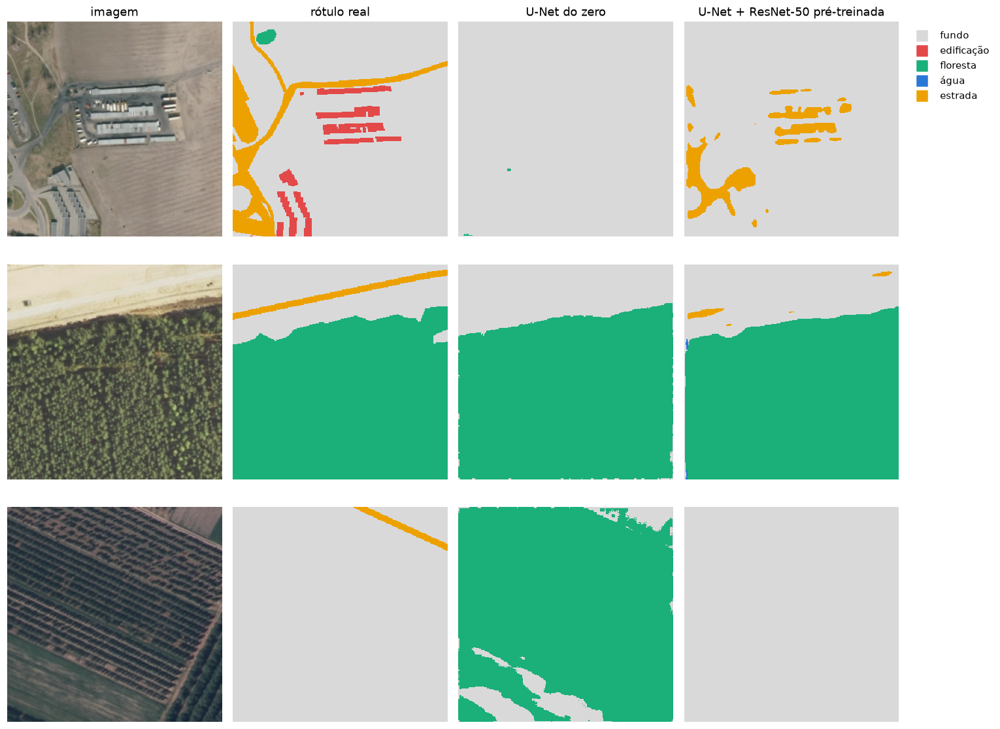
Leitura:
Todas as arquiteturas desta aula fazem a mesma coisa por dentro: transformam a entrada em vetores de números em um espaço de muitas dimensões. Os mapas do encoder da U-Net, o vetor de 2.048 números que a ResNet-50 produz antes da camada de classificação, os tokens de um Transformer: tudo isso são representações da entrada.
Quando essa representação é um vetor que resume um objeto (uma imagem, um pedaço de imagem, uma palavra, um texto), chamamos de embedding. A propriedade que torna embeddings tão úteis:
objetos parecidos ficam próximos no espaço de embeddings.
É como um mapa, só que com 2.048 eixos em vez de 2. Ninguém escolhe o significado de cada eixo: eles surgem do treino.
Na ResNet-50, o embedding é a saída do global average pooling (seção 2.6): os 2.048 mapas da última camada convolucional, cada um resumido pela sua média. É a entrada da última camada linear, a que escolhe entre as 1.000 classes do ImageNet.
resnet50 = resnet50.to(DEVICE).eval()
@torch.no_grad()
def embedding(lote_imagens):
"""lote_imagens: (N, 3, 224, 224) já normalizado → (N, 2048)."""
mapas = resnet50.forward_features(lote_imagens.to(DEVICE)) # (N, 2048, 7, 7)
return resnet50.forward_head(mapas, pre_logits=True).cpu() # global average pooling → (N, 2048)
x = transformacao(Image.fromarray(data.chelsea())).unsqueeze(0)
with torch.no_grad():
print(f"mapas da última camada convolucional: {tuple(resnet50.forward_features(x.to(DEVICE)).shape)}")
e = embedding(x)
print(f"embedding do gato: {tuple(e.shape)}")
print(f"primeiros 8 dos 2.048 números: {e[0, :8].numpy().round(2)}")
print(f"{(e == 0).float().mean():.0%} dos números são zero: a última camada passa por uma ReLU, e cada imagem ativa só parte dos 2.048 detectores")mapas da última camada convolucional: (1, 2048, 7, 7)
embedding do gato: (1, 2048)
primeiros 8 dos 2.048 números: [0. 0. 0. 0. 0. 0. 0. 0.12]
65% dos números são zero: a última camada passa por uma ReLU, e cada imagem ativa só parte dos 2.048 detectoresCortamos as 100 imagens do LandCover.ai em pedaços de 128 × 128 pixels (16 por imagem) e calculamos o embedding de cada pedaço com a ResNet-50 pré-treinada, sem nenhum treino adicional. Cada pedaço recebe como “rótulo” a classe mais frequente nos seus pixels; ficamos só com os pedaços em que essa classe cobre pelo menos 60% da área. Edificações e estradas são estreitas demais para dominar um pedaço inteiro, então nesta seção sobram três classes: fundo, floresta e água.
TILE = 128
todos_ids = ids["train"] + ids["val"] + ids["test"]
tiles, classes_tile, origem = [], [], []
for img_id in todos_ids:
img = torch.tensor(io.imread(f"{PASTA_LC}/output/{img_id}.jpg")).permute(2, 0, 1).float() / 255
mascara = torch.tensor(io.imread(f"{PASTA_LC}/output/{img_id}_m.png")[..., 0]).long()
for i in range(0, 512, TILE):
for j in range(0, 512, TILE):
contagem = torch.bincount(mascara[i:i + TILE, j:j + TILE].flatten(), minlength=5)
classe = int(contagem.argmax())
if contagem[classe] / contagem.sum() >= 0.6:
tiles.append(img[:, i:i + TILE, j:j + TILE])
classes_tile.append(classe)
split = "train" if img_id in ids["train"] else "teste"
origem.append((img_id, split))
tiles = torch.stack(tiles)
classes_tile = np.array(classes_tile)
print(f"{len(tiles)} pedaços de {TILE} × {TILE}:", {NOMES_LC[c]: int((classes_tile == c).sum()) for c in range(5)})
# edificações e estradas quase nunca ocupam 60% de um pedaço: ficamos só com as classes com pelo menos 20 pedaços
fica = np.isin(classes_tile, [c for c in range(5) if (classes_tile == c).sum() >= 20])
tiles, classes_tile = tiles[torch.tensor(fica)], classes_tile[fica]
origem = [o for o, f in zip(origem, fica) if f]
split_tile = np.array([s for _, s in origem])
print(f"ficamos com {len(tiles)} pedaços:", {NOMES_LC[c]: int((classes_tile == c).sum()) for c in np.unique(classes_tile)})
inicio = time.time()
entrada = normaliza(F.interpolate(tiles, size=224, mode="bilinear", antialias=True)) # a ResNet-50 espera 224 × 224
embeddings = torch.cat([embedding(entrada[k:k + 64]) for k in range(0, len(entrada), 64)])
print(f"embeddings: {tuple(embeddings.shape)} ({time.time() - inicio:.0f} s)")1477 pedaços de 128 × 128: {'fundo': 964, 'edificação': 2, 'floresta': 394, 'água': 116, 'estrada': 1}
ficamos com 1474 pedaços: {'fundo': 964, 'floresta': 394, 'água': 116}
embeddings: (1474, 2048) (11 s)Não dá para desenhar 2.048 dimensões. O t-SNE é um método que projeta pontos de muitas dimensões em 2D preservando quem é vizinho de quem: pontos próximos no espaço original continuam próximos no desenho (as distâncias grandes não têm significado).
from sklearn.manifold import TSNE
xy = TSNE(n_components=2, perplexity=30, random_state=0, init="pca").fit_transform(embeddings.numpy())
cores_pontos = ["#898781"] + CORES_LC[1:] # o "fundo" em cinza mais escuro, para aparecer no branco
fig, axes = plt.subplots(1, 2, figsize=(16, 7), width_ratios=[1.25, 1])
for c in np.unique(classes_tile):
m = classes_tile == c
axes[0].scatter(xy[m, 0], xy[m, 1], s=14, color=cores_pontos[c], alpha=0.75, label=f"{NOMES_LC[c]} ({m.sum()})")
axes[0].set(title="Embeddings da ResNet-50 (2.048 dimensões → 2 com t-SNE)", xticks=[], yticks=[])
axes[0].legend(frameon=False, markerscale=2, title="classe dominante")
# algumas miniaturas sobre o mapa, para ver o que há em cada região
gerador = np.random.default_rng(0)
meio = 0.035 * (xy.max() - xy.min()) # metade do lado de cada miniatura
axes[1].scatter(xy[:, 0], xy[:, 1], s=4, color="#e6e5e1")
for k in gerador.choice(len(tiles), 45, replace=False):
caixa = [xy[k, 0] - meio, xy[k, 0] + meio, xy[k, 1] - meio, xy[k, 1] + meio]
axes[1].imshow(tiles[k].permute(1, 2, 0), extent=caixa, zorder=3)
axes[1].set(title="O mesmo mapa com algumas das imagens", xticks=[], yticks=[],
xlim=(xy[:, 0].min() - 2 * meio, xy[:, 0].max() + 2 * meio), ylim=(xy[:, 1].min() - 2 * meio, xy[:, 1].max() + 2 * meio))
for ax in axes:
ax.grid(False)
plt.tight_layout()
plt.show()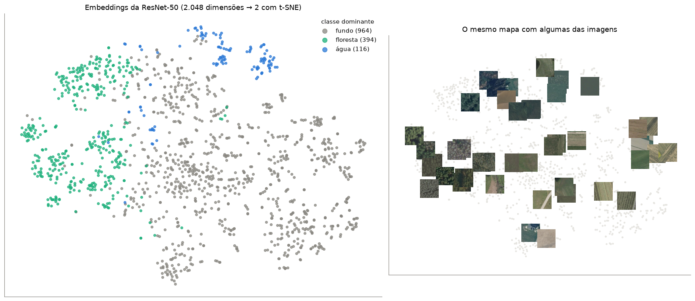
Leitura: a ResNet-50 nunca viu uma imagem aérea nem um rótulo de uso do solo, e mesmo assim os pedaços de floresta se agrupam em uma região e os de água em outra (na verdade em dois grupos: água escura e água clara, esverdeada). O fundo (campos, solo exposto, áreas urbanas) se espalha pelo resto, em subgrupos por textura: plantações em linhas, solo nu, gramado. As características que a rede aprendeu com fotos comuns já organizam as imagens aéreas por semelhança.
Se imagens parecidas têm embeddings próximos, dá para buscar imagens parecidas com uma conta simples. A medida mais usada é a similaridade de cosseno: o cosseno do ângulo entre dois vetores (1 = mesma direção, 0 = sem relação).
\[\text{sim}(a, b) = \frac{a \cdot b}{\|a\|\,\|b\|}\]
Para cada imagem de consulta, buscamos as 5 mais parecidas entre os pedaços de outras fotos (para não valer pedaços vizinhos da mesma foto).
emb_norm = F.normalize(embeddings, dim=1) # vetores de comprimento 1: o produto escalar vira o cosseno
similaridade = emb_norm @ emb_norm.T # (N, N): a similaridade de cada par de pedaços
foto = np.array([i for i, _ in origem])
consultas = [int(np.flatnonzero(classes_tile == c)[3]) for c in [3, 2, 0]] # água, floresta, fundo
fig, axes = plt.subplots(len(consultas), 6, figsize=(14, 2.95 * len(consultas)))
for linha, q in enumerate(consultas):
s = similaridade[q].clone()
s[torch.tensor(foto == foto[q])] = -1 # ignora pedaços da mesma foto
vizinhos = s.topk(5).indices
axes[linha, 0].imshow(tiles[q].permute(1, 2, 0))
axes[linha, 0].set_title(f"consulta ({NOMES_LC[classes_tile[q]]})", color=TINTA, fontsize=10)
for k, v in enumerate(vizinhos):
axes[linha, k + 1].imshow(tiles[v].permute(1, 2, 0))
axes[linha, k + 1].set_title(f"sim = {s[v]:.2f}\n{NOMES_LC[classes_tile[v]]}", fontsize=9,
color=VERDE if classes_tile[v] == classes_tile[q] else LARANJA)
for ax in axes[linha]:
ax.axis("off")
plt.suptitle("Busca por similaridade nos embeddings (verde = mesma classe da consulta)", y=1.0)
plt.tight_layout()
plt.show()
Um embedding também é uma ótima tabela de features para os métodos de Machine Learning clássico. Com um simples k-vizinhos mais próximos (k-NN) sobre os embeddings, sem treinar a rede, classificamos a classe dominante dos pedaços das fotos de teste usando só os pedaços das fotos de treino:
from sklearn.neighbors import KNeighborsClassifier
from sklearn.metrics import accuracy_score, balanced_accuracy_score
treino_t, teste_t = split_tile == "train", split_tile == "teste"
knn = KNeighborsClassifier(n_neighbors=5, metric="cosine").fit(embeddings[treino_t].numpy(), classes_tile[treino_t])
pred_knn = knn.predict(embeddings[teste_t].numpy())
maioria = np.bincount(classes_tile[treino_t]).argmax()
print(f"pedaços de treino: {treino_t.sum()}, de teste: {teste_t.sum()}")
print(f"k-NN nos embeddings: acurácia = {accuracy_score(classes_tile[teste_t], pred_knn):.1%} "
f"acurácia balanceada = {balanced_accuracy_score(classes_tile[teste_t], pred_knn):.1%}")
print(f"chutar sempre '{NOMES_LC[maioria]}': acurácia = {(classes_tile[teste_t] == maioria).mean():.1%}")pedaços de treino: 1023, de teste: 451
k-NN nos embeddings: acurácia = 87.1% acurácia balanceada = 78.5%
chutar sempre 'fundo': acurácia = 61.9%Leitura: sem treinar a rede e sem nenhum ajuste, um k-NN sobre os embeddings acerta muito mais do que chutar sempre a classe mais comum. A acurácia balanceada (a média do acerto em cada classe) mostra que ele também acerta as classes menores, não só o fundo. É por isso que embeddings de modelos pré-treinados são tão usados: transformam imagens em tabelas de features prontas para os métodos clássicos das aulas de Machine Learning.
A mesma ideia está mudando o sensoriamento remoto: em vez de baixar e processar imagens brutas, já é possível usar embeddings prontos, calculados por modelos de fundação. Exemplos:
Com embeddings, tarefas como “encontre áreas parecidas com esta”, agrupar regiões ou treinar um classificador com poucos exemplos ficam rápidas e baratas. Na próxima aula veremos o mecanismo de atenção e os Transformers, que produzem um embedding para cada pedaço da imagem (ou cada palavra de um texto).
| Arquitetura | Ano | Era | Tipo de treino | Ideia-chave | Ponto fraco |
|---|---|---|---|---|---|
| CNN / LeNet-5 | 1998 | antiga | supervisionado | filtros aprendidos, pesos compartilhados | contexto local |
| AlexNet | 2012 | antiga | supervisionado (ImageNet) | profundidade + GPU + ReLU | pesada, ad hoc |
| VGG | 2014 | antiga | supervisionado (ImageNet) | empilhar convoluções 3 × 3 | 138 M parâmetros, para de melhorar com mais camadas |
| ResNet | 2015 | clássica, muito usada | supervisionado (ImageNet) | skip connections (soma) | ainda é local |
| U-Net | 2015 | clássica, muito usada | supervisionado (máscaras) | encoder-decoder + skips longas (concatenação) | precisa de máscaras rotuladas |
F(x) + x permite redes com dezenas ou centenas de camadas.UNet da seção 4.1, remova as skip connections (passe um tensor de zeros no lugar de skip). O que acontece com as bordas das classes nas previsões?F.cross_entropy(..., weight=pesos) com pesos maiores para edificação e estrada. O IoU dessas classes melhora?tiles.flatten(1)). O k-NN fica melhor ou pior? O que isso diz sobre os embeddings?